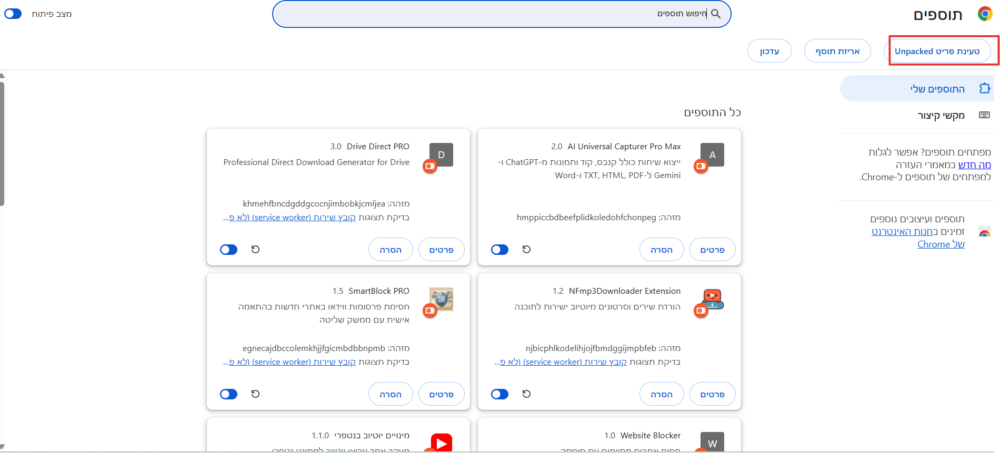

מדריך והתקנת תוסף לניקוי קישורים עם כוכביות
הסבר קצר על התוסף:
נמאס לי כל פעם להעתיק קישורים עם כוכביות (****) ולמחוק אותם ידנית כדי שיהיה אפשר להיכנס אליהם. הכנתי תוסף קטן לדפדפן (בעזרת AI) שפשוט חוסך את כל העבודה הזו.
ברגע שלוחצים על קישור שיש בו את התווים האלו, התוסף מנקה אותם לבד ופותח את הכתובת התקינה בלשונית חדשה.
מה הסקריפט כולל:
- ניקוי קישורים עם כוכביות (****) באופן אוטומטי
להורדה
מדריך להתקנה:
-
1) מחלצים את הקבצים מהזיפ לתיקייה.
-
2) פותחים את תפריט הדפדפן (3 נקודות למעלה) -> "תוספים" (Extensions) -> "ניהול תוספים", או מעתיקים לשורת הכתובת:
chrome://extensions/ומפעילים "מצב מפתח" (Developer Mode).
-
3) לוחצים על "Load unpacked" (טעינת תוסף שלא נארז) ובוחרים את התיקייה שחילצנו:

ולאחר מכן בוחרים את התיקייה שהתקנו:
בהצלחה!!!
← חזרה לדף הראשי